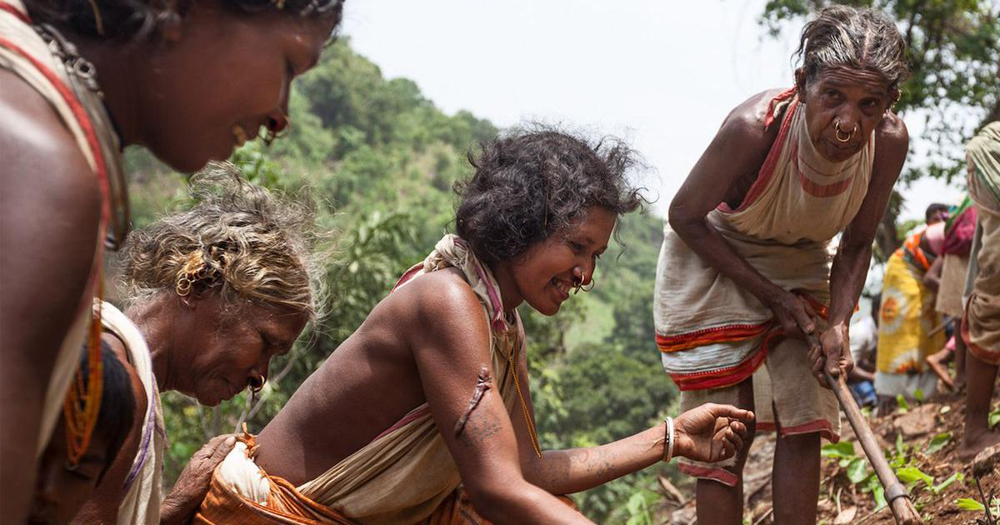
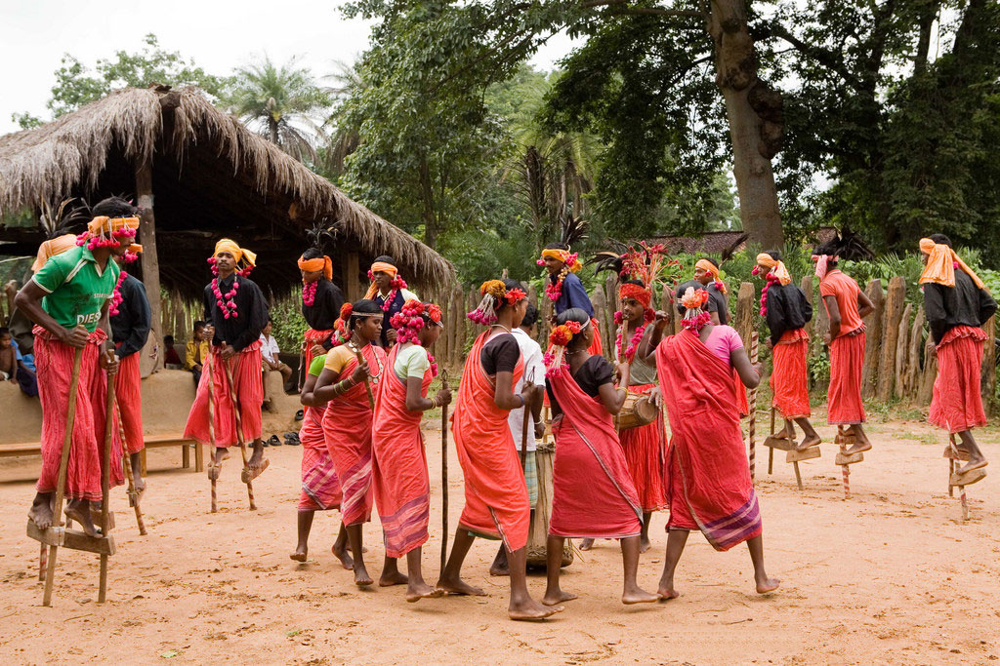
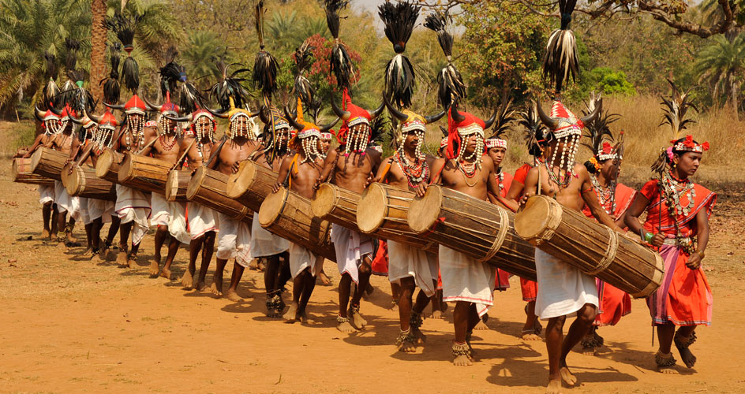
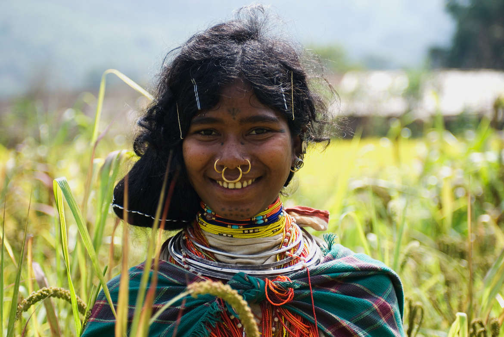

Dongria People
Below is the audio recording of an instance when the Dongria farmers worship the nature to bless them with rain for a good harvest. As more and more people from the tribe join in and earnestly offer their prayer-cum-song ('bhajan'), the nature blesses them with rain.
Press play to experience their journey with nature:
About The Tribe
The Niyamgiri hill range in Odisha state, eastern India, is home to the Dongria Kondh tribe. Dongria Khonds (also spelt Kondha, Kandha etc.) are a tribal community in India. They derive their name from 'dongar', meaning ‘hill’ and the name for themselves is 'jharnia' meaning protector of streams. To be a Dongria Kondh is to farm the hills’ fertile slopes, harvest their produce, and worship the nature.
Traditionally hunter-gatherers, they hold large tracts of fertile land but still practice hunting, gathering and slash-and-burn agriculture in the forests as a symbol of their connection to and ownership of the forest.
The deep reverence that the Dongria have for their gods, hills and streams pervades every aspect of their lives. Even their art reflects the same.




Nature Worship
Offering prayers to nature is a common practice among the Dongria Khond People. Traditionally, the Dongria religious beliefs were syncretic combining totemism, animism, ancestor worship, shamanism and nature worship; the most important being the godess Earth, who is held to be the creator and sustainer of the world.
The deep connection that the Dongria people have with their land and enviornment, very well explains and justifies their rain-invoking rituals. Monsoon season is a very important season for the farmers sect in India and as a result, the Dongria people often offer their prayers in the form of 'bhajans', followed by their traditional dance in the honour of mother Earth to bless them will ample rain for a good surplous harvest.